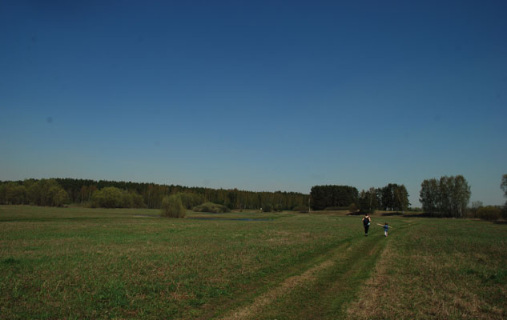
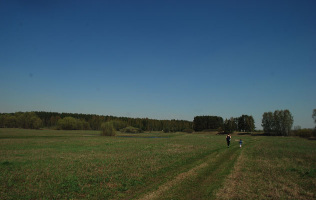
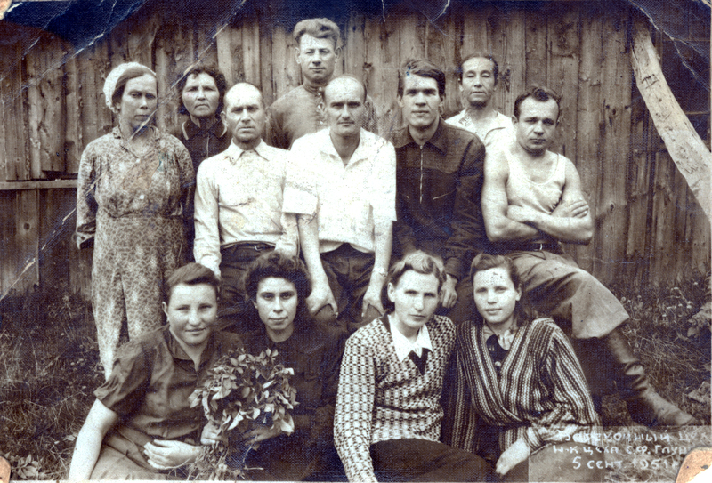
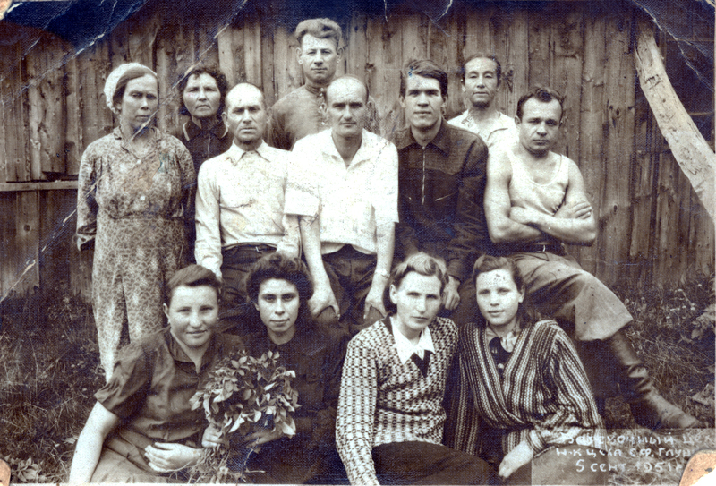

Деревня Лохино
Московская губернияЗвенигородский уездПавловская волость


 



 


Лохино — деревня, стоявшая столетиями на правом берегу старого русла Москвы-реки напротив Усадьбы Архангельское.
Как известно, до введения на Руси христианства наречение ребёнка именем, представляющим собой название животного или растения, было очень распространённой традицией. Это соответствовало языческим представлениям человека о мире.
Подобного рода именования документированы еще в XVI-XVII веках: Ириша Лох Савосин, крестьянин, 1539; Сава Лохов, приказчик Кирилло-Белозерского монастыря, 1558; Семен Лохов, посадский человек, 1624, Зарайск.
Таким образом, потомки человека, обладавшего именем или прозвищем Лох, со временем получили фамилию Лохины.
Практика давать ребенку в дополнение к официальному крестильному имени еще одно, некрестильное, удерживалась вплоть до XVII в. и привела к тому, что фамилии, образованные от мирских имен, составили значительную часть от общего числа русских фамилий.
Поскольку процесс формирования фамилий был достаточно длительным, о точном месте и времени возникновения фамилии Лохин в настоящее время говорить сложно. Однако с уверенностью можно сказать, что она принадлежит к числу древнейших русских семейных именований и может немало рассказать о жизни и быте наших далеких предков.
Точное время основания деревни пока не установлено, но в историческом очерке М.П. Степанова «Село Ильинское» деревня упоминается в 1618 году в период Смутного времени.
На сто лет позже деревня упоминается в переписной книге помещичьих крестьян за 1709 год по Вяземскому стану. Книга рассказывает нам о том, что деревня Лохина числилась за князем Дмитрием Михайловичем Голицыным и проживало в ней 20 человек.
В 1810 году деревня Лохино вместе с усадьбой Архангельское была куплена князем Николаем Борисовичем Юсуповым (1750–1831). После чего начался расцвет и развитие усадьбы и её окрестностей.
С середины XIX века и до упраздения Московской Губернии деревня относилась к Павловской волости Звенигородского уезда, а с 1921 года Воскресенского уезда Московской губернии.
Зимой 1932–1933 года деревня была перенесена в Кунцевский район Подмосковья близ деревни Мамоново.
1618 год
Первое упоминание о деревне
в архивных источниках.
Более 400 лет
Возраст деревни
12 000 лет
Возраст реликтового озера Глухая яма, которое находится на острове.
В переписной книге селений князей Одоевских за 1678 год в д. Лохино числится семья бобыля Гришки Иванова.
У него 2 сына, один из них Петрушка 4 лет. Это прямой предок Макаровых.

Генеалогическое древо
рода Макаровых